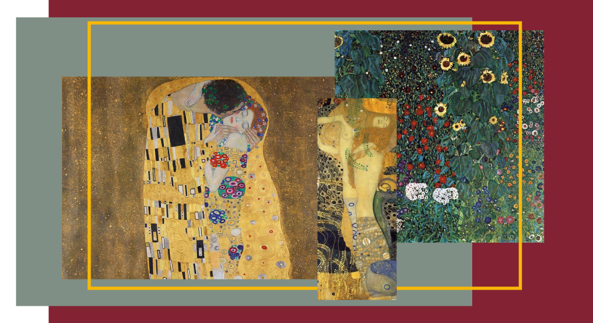
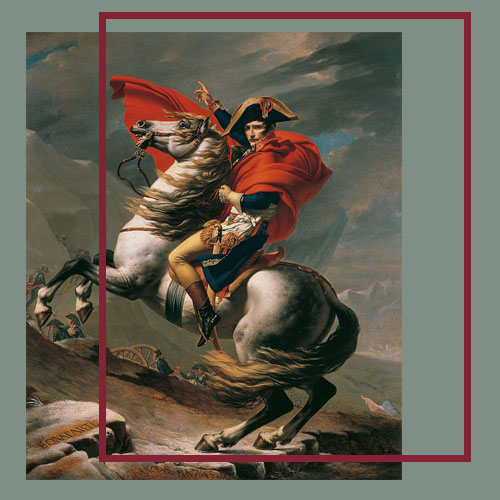
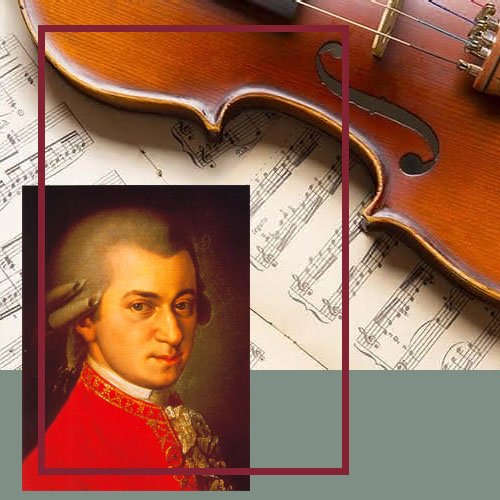
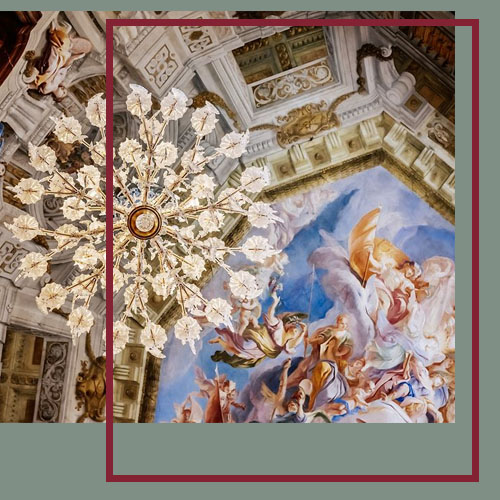

Museo Belvedere
El Museo Belvedere los invita a recorrer, con entrada libre y gratuita para niños y jubilados, las colecciónes permanentes los días lunes de 8 a 14hs. Consultá la programación completa de actividades gratuitas de diciembre y enero.
Eventos Belvedere

Obras de Arte
La mundialmente famosa colección del Belvedere albergan hoy arte austriaco desde la época medieval hasta el presente.

Conciertos
Experimente la música clásica como nunca antes en esta asombrosa interpretación de obras maestras de Mozart.

Visitas Guiadas
En el Belvedere Superior, para los grupos a partir de 10 personas, es imprescindible hacer una reserva para realizar su visita.